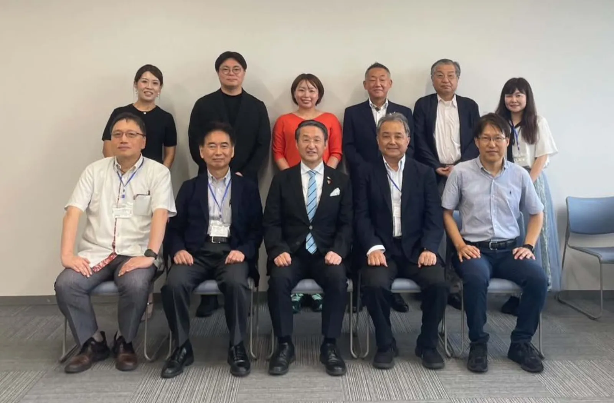

01
歴史と兵法で読み解く経営
上杉鷹山の財政再建、二宮尊徳の分度、武田信玄の人づかい。先人の一手を、いまの中小企業の現場に置きかえてお話しします。
経営者・後継者／商工団体／金融機関
Stage

Speaker
倉吉市役所の職員時代、閉店まであと1か月の準限界集落のマイクロスーパーを、1か月で黒字に立て直す。その様子がNHK「おはよう日本」で全国放送され、県知事や総務省が視察に訪れるお店に。
鳥取県庁の外郭団体で新規事業の立ち上げや法人設立を支援したのち、父の病気をきっかけに81年続く時計店の三代目を承継。2024年に合同会社TOSUを設立し、全国・海外の中小企業の経営支援とPR広報に携わる。日本海テレビ「One」レギュラーコメンテーター。
Theme
ご依頼の目的と聞き手に合わせて、内容と時間を調整します。下のテーマを組み合わせることもできます。
01
上杉鷹山の財政再建、二宮尊徳の分度、武田信玄の人づかい。先人の一手を、いまの中小企業の現場に置きかえてお話しします。
経営者・後継者／商工団体／金融機関
02
父の急病で、準備のないまま81年続く時計店を継いだ実体験と、支援者として関わった第三者承継の現場から。
後継者・経営者／金融機関／支援機関
03
集落のマイクロスーパーを1か月で黒字化した話を入り口に、行政と民間が組んで地域を動かすための考え方を。
自治体・議会／まちづくり団体／青年会議所
04
掃除・片付け・在庫管理を仕組みにすると、経費も時間も変わる。今日から職場でできる小さな改善をお伝えします。
企業研修／店舗・事業所
05
テレビ・新聞に取り上げられる企画の立て方から、SNSでの発信まで。予算をかけずに「知ってもらう」方法を。
経営者／商工団体／広報担当者
06
公務員から経営者へ。失敗も含めた自分の道のりを通して、学ぶこと・働くことの面白さを伝えます。
小・中・高校／大学／教職員の研修
Format
対応エリア：全国（鳥取県倉吉市から伺います）。講演料・交通費は、内容・時間・場所をお聞きしてからお見積りします。

講演のダイジェスト動画が入ります
Flow
日程の候補・場所・聞き手・ご希望のテーマをお知らせください
内容・時間・場所に合わせて、講演料と交通費をご提示します
聞き手の状況や、持ち帰ってほしいことをすり合わせます
終了後、アンケートの結果を踏まえてふり返りもできます